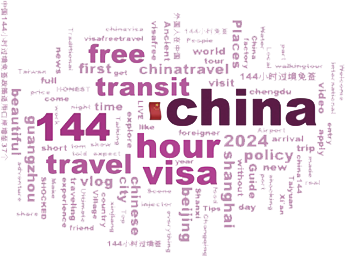
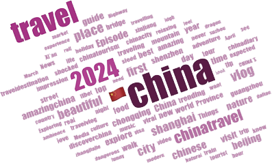

少于三个月的有效国际旅行证件和144小时内以确定日期及座位的前往第三国（地区）的联程客票或相关证明即可。随着144小时免签政策的出台，来华旅游的便利性大大提升，便于外国游客真切地感受到丰富多彩直观立体的当代中国——“China Travel"开始走向进行时
少于三个月的有效国际旅行证件和144小时内以确定日期及座位的前往第三国（地区）的联程客票或相关证明即可。随着144小时免签政策的出台，来华旅游的便利性大大提升，便于外国游客真切地感受到丰富多彩直观立体的当代中国——“China Travel"开始走向进行时
目录
中国行, 何以行？
——细说144小时免签政策实施后#China travel#走红
001 导言
002 144小时免签政策的“前世今生”
144小时免签政策时间轴
144小时免签政策推广
003 有朋自远方来 “朋”都是谁？
有朋自远方来，“朋”从哪来？
有朋自远方来 “朋”什么样？
有朋自远方来 “朋”爱什么？
004 #China travel#走红进行时
来华游客数量激增
YouTube播放量大幅增加
旅游收入带动旅游业回温
005 中国“CITY”在哪里？
哪里最“CITY?”
什么最“CITY”
006 何以更City？——来华不便改善与政策前景展望
何以更“City“？
144小时过境免签政策的未来
007 结语
008 参考资料及团队成员
参考资料
团队成员
2024年夏天，“China Travel”在外网爆火，“City不City啊”走红中外社交媒体网络，其起因是外国博主“保保熊”带着妹妹来中国旅游，和妹妹聊天时总会用魔性的语调问一句“city不city啊～”，由于其声音过于洗脑，因此成为许多网友争相模仿的对象。
“保保熊”表示很开心大家一起“City”起来了，他表示“City”不仅代表着目的地的城市化程度，更代表一种让人感到“刺激”、“令人开心和享受”的情绪。
外交部发言人评论“City不City啊”走红网络时，表示很高兴看到外国朋友们在中国享受美景美食，亲身感受生动真实的中国。
“China travel”中国行在今年“喷井式爆发”，来中国旅游成为各地国外博主手中的流量密码，缘何如此？
与申请时间长达30天并且需要提交一系列材料才可申请下来的旅游签证L签不同，144小时过境免签无需额外占用申请时间，只需提供有效期不少于三个月的有效国际旅行证件和144小时内以确定日期及座位的前往第三国（地区）的联程客票或相关证明即可。随着144小时免签政策的出台，来华旅游的便利性大大提升，便于外国游客真切地感受到丰富多彩直观立体的当代中国——“China Travel"开始走向进行时
图片来源：English.www.gov.cn
有朋自远方来，“朋”从哪来？
近年来，来华游客平均年龄增加，老年人占比有所提升，中年旅客占比有所降低，越来越多外国人——尤其是中老年人对中国感兴趣程度日益加深。
数据来源： Travel China Guide和Adventure Begins Here-TourRadar网数
来华游客的出行偏好上，首次华的游客、年长的游客以及不熟悉当地语言和文化的人，跟团游明显更受欢迎。
而经验丰富的旅行者更喜欢私人独立旅游，自己制定行程以获得更深入、更真切的旅游体验。
同时，免签政策的不断优化也会鼓励更多外国人来华经商、工作、学习、生活，推动经贸、人文合作，促进各类要素跨国流动。
“好多外国人啊，一出门还以为自己出国了”
“出个门包里有3个脆脆鲨和一百块钱，回来3个脆脆鲨不见了”
“全是拼多多新用户，能让他们帮忙砍一刀吗？”
“从中国回来的戒断反应”
“34小时铁腚大冒险，我以为他俩预算太低，结果剪头30小费给了170”
“小孩哥：不儿也没人告诉我中国人会魔法啊”
“当我在拉萨街头看到一群又一群的歪果仁的时候我就知道事情不一般了”
“外国人：长城city不 city”
“大家都在搜144小时等于多少天”
“印尼飞广州的南航，围了一圈儿老内，我成老外了”
2024年上半年，入境外国人人数同比暴增152.7%，免签入境人数更是增长了190.1%
出入境人数和免签入境人数达到为近四年以来新峰值，其中免签入境占全部入境人数的将近一半。
144小时免签政策出台后，有关于 “China Travel”的视频播放量超过60000000次，拍摄在中国旅游的视频成为了外国博主的“流量密码”。
旅游收入带动旅游业回温
去哪网平台数据显示，外国游客国内航线机票预定量同比增长1.8倍，近半年内，超过10%的外国游客选择回访。携程数据
表明，享受过境免签国家旅游局的外国游客消费数据政策的境外游客订单环比增长28%。近四年来入境旅游总收入不断攀升，入境旅游带来的旅游收入在我国旅游总收入中的占比也日益提高，逐渐成为带动我国旅游业回温的中流砥柱。
哪里最“CITY?”
外国旅客在中国乘飞机出行的十大热门目的地中，广州居首，其次则为上海、北京、深圳、成都、杭州、西安、重庆、昆明、青岛。大部分为超一线或一线城市，经济发展迅速，城市基础建设完善，让人直呼“这很city！”什么最“CITY”
YouTube上外国vlog视频标题高频词不仅包含中国各大城市的名称，还涵盖了“beautiful（漂亮的）”，“Traditional（传统的）”形容词来形容中国各大城市的景点；“shocked（震惊）”，“expect（期待）”和“funny（有趣的）”等词汇入榜也反映了外国游客对于在华旅游的感悟与心情，外网自媒体博主中主流声音表达的是对中国的惊喜与好奇。
来源：YouTube#China travel 2024#和#China 144#下视频标题
何以更“City“？
中国正在重新成为外国人的热门目的地
China travel正在成为中国对外展示和交流的重要窗口。
然而
外国人的“中国行”
总会遇到各种各样的问题......
针对外国人来华支付不便的问题，
国内多地做出众多措施来改善
以北京为例
为提升外籍乘客地铁出行支付便利性，6月1日起，北京地铁所辖17条线路335座车站完成了POS机铺设，外籍乘客可通过POS机，使用外国银行卡支付购票乘车。
除此之外，为给外籍乘客提供更加准确、精细、丰富的信息，北京地铁公司在8座车站试点配置了多语种翻译机。
正如外交部发言人评论“City不City啊”走红网络时表示“中国就在这里，欢迎大家来”。随着政策适用范围的不断扩大、政策内容的持续优化以及其对旅游业、文化交流和经济发展的积极推动作用，预计未来将会有越来越多的外国人来华，亲自领略这个国家的种种奇迹，144小时免签政策的未来展望积极向好
“morden（现代）”中国的形象打破了外国人一直以来对中国的刻板印象，中国的“City“，亦或是“City”的中国已让其为之一振，中国自己搭建了足够广阔的舞台让世界看到：
中国行将如此行 ！
数据来源：
1.环球日报globaltimes
《144-hour visa-free transit policy triggers 'China Travel' boom》
https://www.globaltimes.cn/page/202407/1316093.shtml
2.北京日报
《刷闸乘地铁！北京将推一卡通国际卡BEIJING PASS》
https://mp.weixin.qq.com/s/jfUwN5BWgYGhzQOj8lCCUg
3.中国旅游报
《2022年国民经济和社会发展统计公报显示：国内游客25.3亿人次国内 旅游收入20444亿元》
https://www.mct.gov.cn/whzx/whyw/202303/t20230301_939436.htm
4.World Bank Group
《International tourism, expenditures (current US$) -CHINA》
https://data.worldbank.org/indicator/ST.INT.XPND.CD?locations=CN
5.China Briefing
《China’s Tourism Sector Prospects in 2023-24》
https://www.china-briefing.com/news/chinas-tourism-in-2023-outlook-trends-and-
6.中华人民共和国中央人民政府
《China sees 3.67 bln domestic tourist visits in first 3 quarters》
http://english.www.gov.cn
数据收集与分析、数据可视化、美工|李怡然、王淑娴、简璐、王潇、唐如婧
写作|李怡然、王淑娴、简璐
网页制作|王潇、唐如婧
指导老师|刘娜
联系方式|2870587189@qq.com